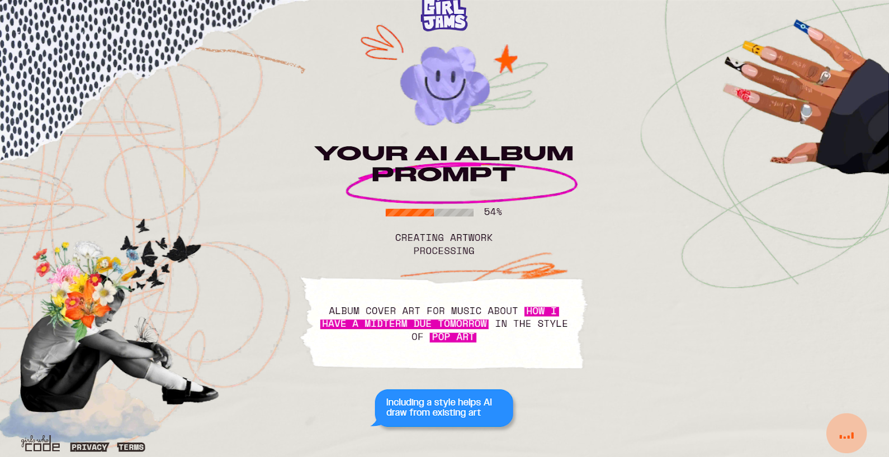
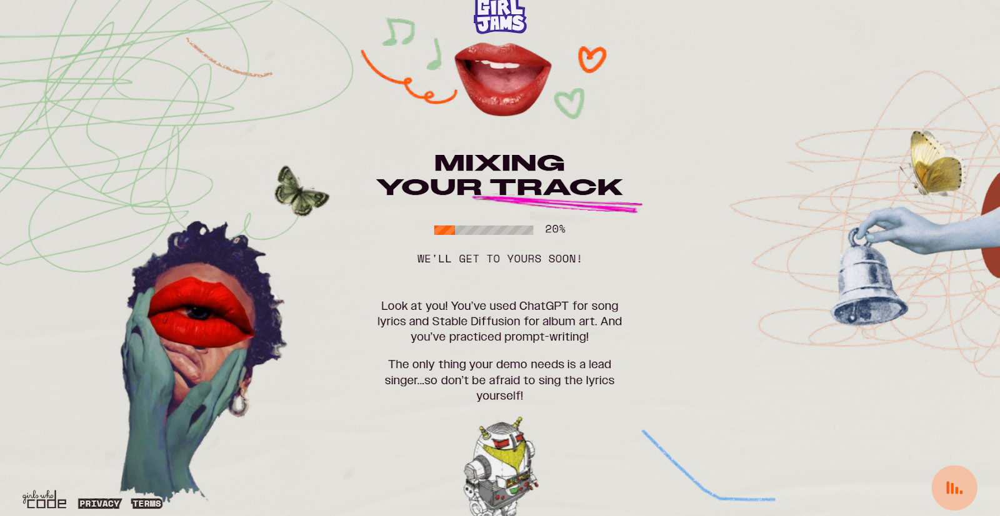
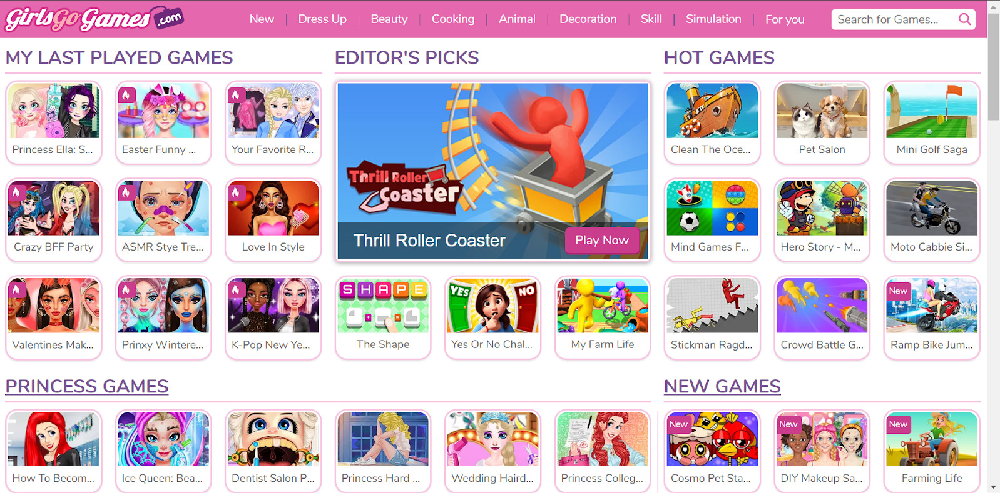
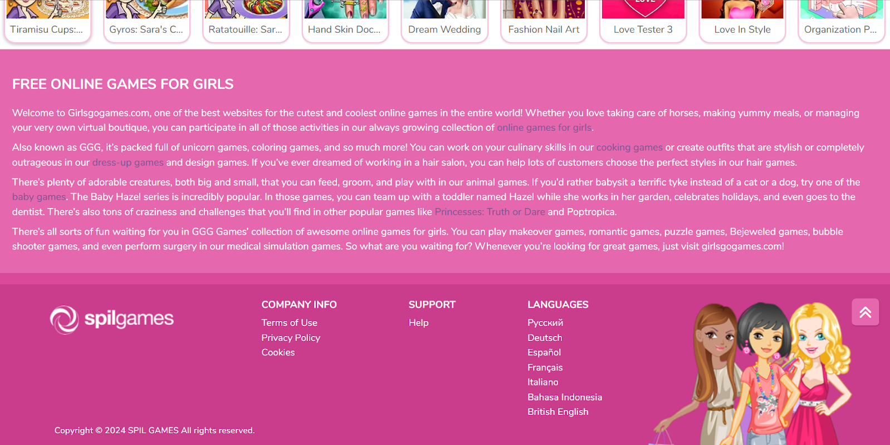

Slaveryfootprint.org is a great source of inspiration as it also aims to inform consumers about the ethicality of their purchases, although in this case, it is linked to their slavery footprint. It has the barebone concept of how we intend to spread awareness about fast fashion and consumerism, but it doesn't have the aesthetics desired or the gamified aspect. However, the neatness of this site's UX and UI design is of the calibre we hope to achieve as we don't want our graphics and animations to impact easy navigation.
 GirlJams.AI allows you to launch fictional singles generated by AI according to your preferences in music genre, topic, and album cover. This website effectively uses animation to create a dynamic layout. The waiting time is even interactive as the cursor leaves colourful crayon marks in the background, allowing users to doodle with their mouse. We aim to create elements in our dress-up game website that are just as engaging.
 GirlsGoGames.com is the website that has inspired the core concept for our project. Despite not being the most well-constructed, it remains iconic for those who grew up in the 2000s for its flash games, and most notably, its dress-up narratives. To pay homage to the website we grew up loving, we also chose to lean towards a pink and purple colour scheme.